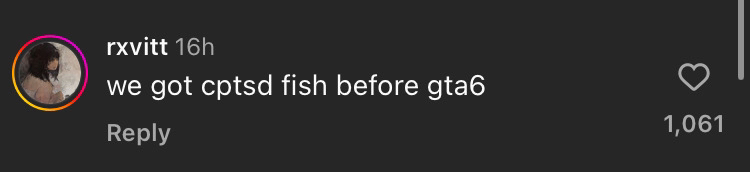
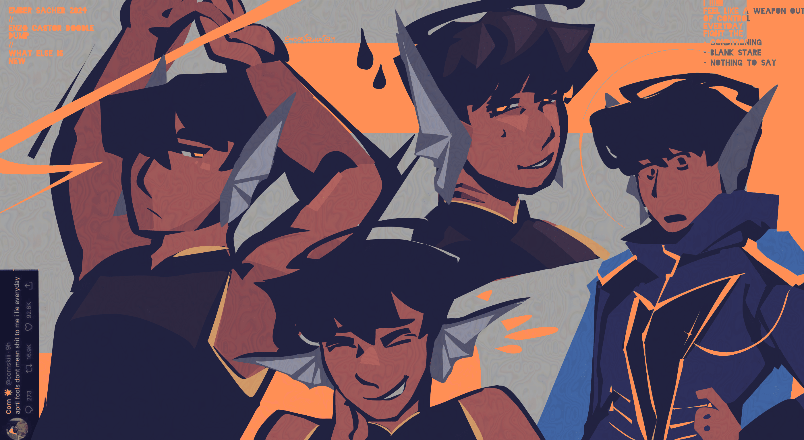

mentally healthy fish:
creation date: may 14
character featured: enzo
this was made in honor of a deranged as hell motivational instagram reel that i found. i wish i still had the link, but all i have is these screenshots that made me laugh. have fun.



𝓱𝓮𝓵𝓵𝓸 𝓿𝓻𝓸 ♥
other enzo doodles i didnt know where else to put
creation date: may 20-may 31
